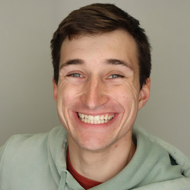

Dima Tretiak
NSF GRFP Fellow | SpaceX | UW | GT
About Me
I'm a Ph.D. student in Mechanical Engineering at the University of Washington, working with Steve Brunton and J. Nathan Kutz. My research focuses on developing physics-constrained machine learning methods for fluid dynamics, controls, and broader dynamical systems applications. Interspersed between semesters of research, I've garnered experience at SpaceX, Raytheon, and Los Alamos National Laboratory where I've gotten the opportunities to bridge theoretical research with practical engineering applications.
My work spans from developing multi-gas CFD models for space capsules to exploring novel neural network architectures for physics-constrained forecasting of dynamical systems. Below is a brief description of where I've been, if you'd like a more detailed accounting please see my Resume/CV. If you'd like to reach out, I'd love to hear from you; feel free to contact me!
Experiences
Ph.D. Student
University of Washington
Researching AI applications for fluids dynamics and controls with Dr. Steve Brunton and Dr. J. Nathan Kutz. Focused on physics constrained forecasting of spatiotemporal systems.
Graduate Intern
SpaceX
Developed multi-gas internal CFD models for the Dragon Capsule to evaluate air mixing risks. Revamped Falcon Heavy aerothermal model including landing legs and simulated tank skin heating during ascent.
B.S. Mechanical Engineering
Georgia Institute of Technology
Graduated with 4.00 GPA. Received Richard K. Whitehead Jr. Memorial Award and Faculty Honors (2019-2023).
Aerothermal Modeler Intern
Raytheon Technologies Research Center
Implemented physics-informed deep learning airfoil flow emulator into SAO schemes. Developed ML Wall Model for WMLES applied to turbine blade film cooling using physics-guided data augmentation.
Student Intern
Los Alamos National Laboratory
Developed 3D GANs with embedded physical constraints using finite difference and spectral methods to emulate turbulent flows.